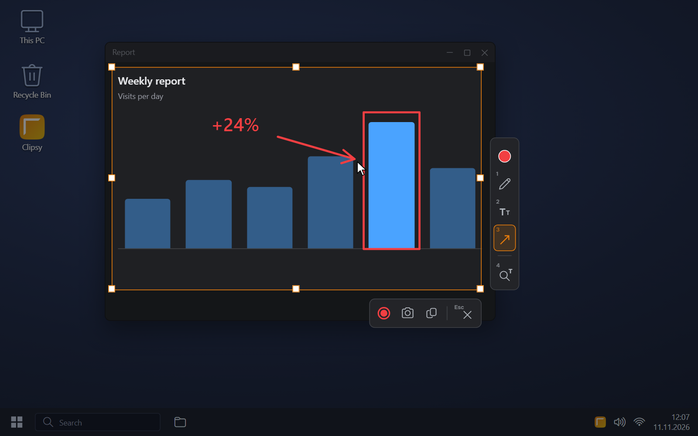
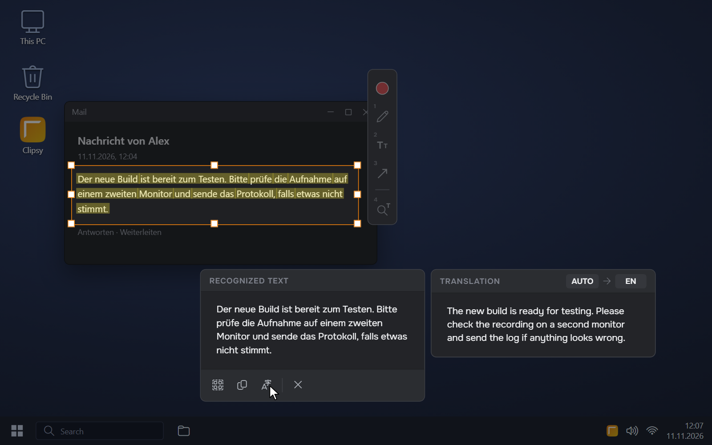
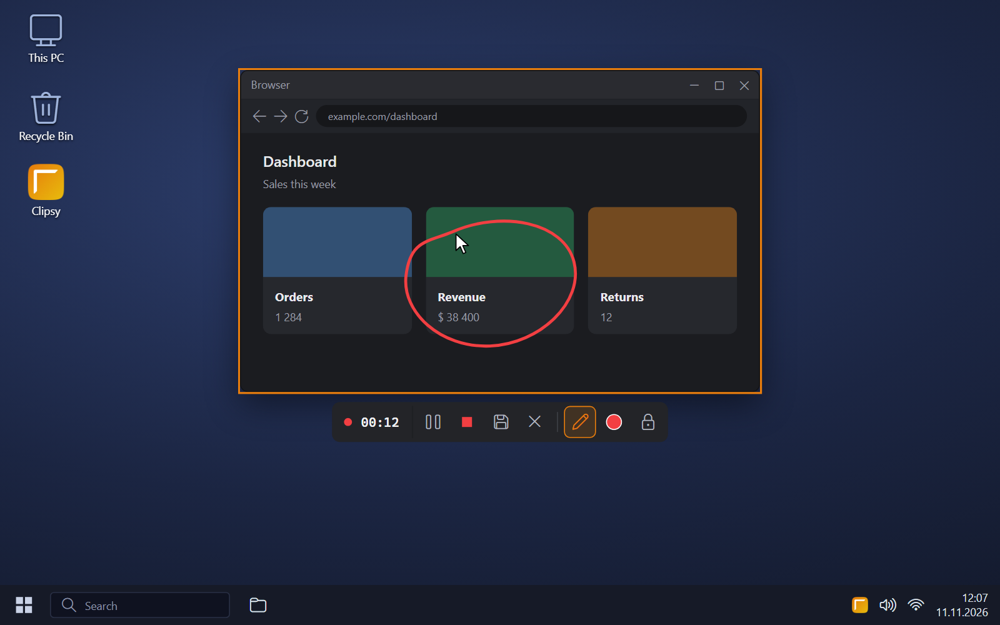
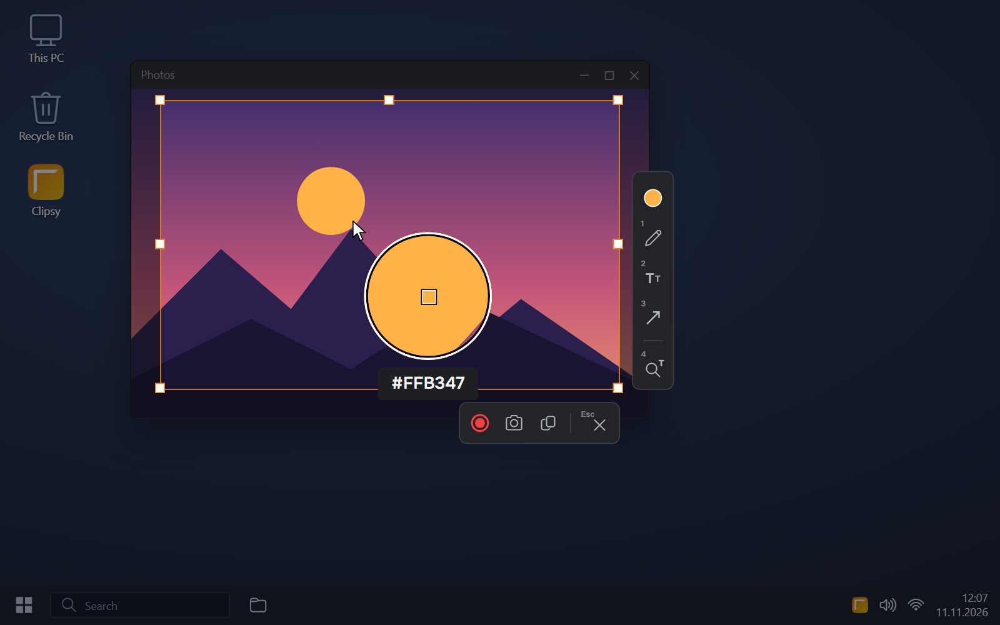
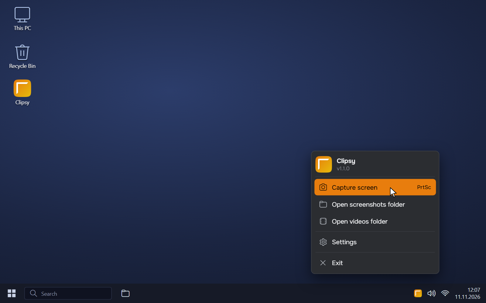
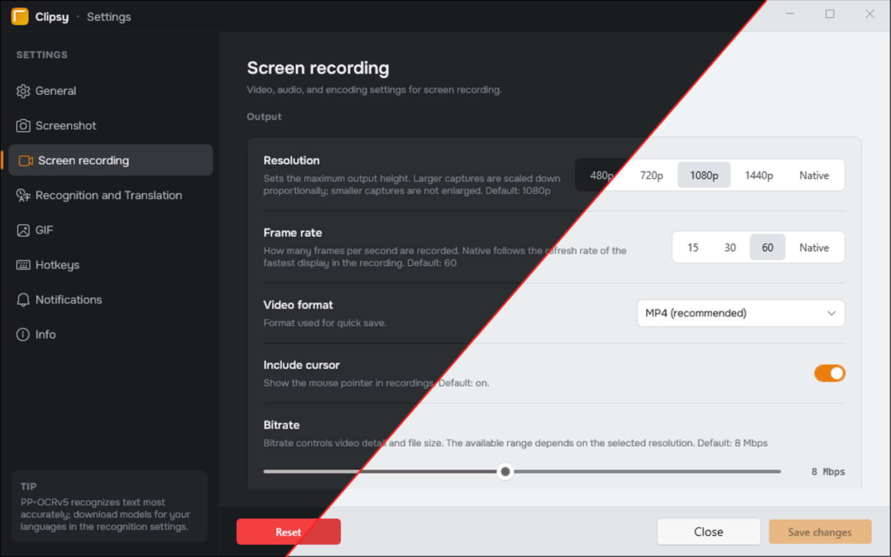

Screenshots
Easy capture of one or several monitors, as well as individual apps
Clipsy is a small, fast alternative to the Windows Snipping Tool. It lets you take a screenshot and draw on it right away, recognize and translate text from the screen, and record video or GIF. And all of it in one app!
Requirements: Windows 10 (1809 or newer) or Windows 11 (21H2 or newer), 64-bit
Easy capture of one or several monitors, as well as individual apps
A simple editor right on top of the screenshot: pencil, shapes, lines, arrows and text
A quick way to record a region or a window to popular video formats, with drawing, microphone recording and audio of individual apps
Saving a recording as an animated GIF with adjustable frame rate and colours
Copying text straight from the screen, with translation
Precise colour picking from any point on the screen with a magnifier
Your own shortcuts in place of the default ones, including an instant screenshot without the overlay
Quick copying to the clipboard or saving to a file, with the folder opened afterwards
The same look as Windows, or the one you choose
Control of screenshots and settings from scripts through clipsy-cli





